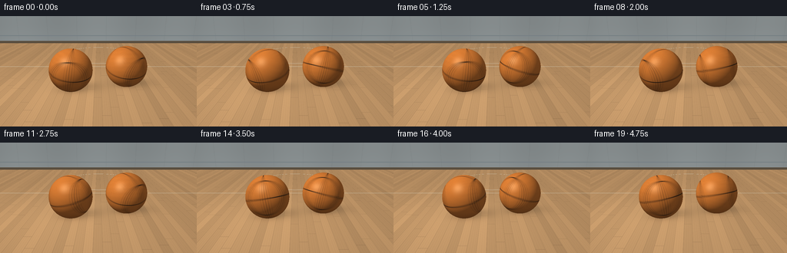
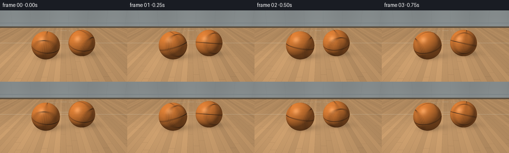

CODING AGENTS AS PIXEL WORLD MODELS
traex/GPT-6.1-Sol · instance_preservation_0026
点击播放 · 原生 RGB 像素
逐轮保存的候选
回放视频、检查图与代码变化。
每份候选均可单独播放。实际图片检查记录在下方工具轨迹中。
候选 01播放与检查图
点击播放 · 原生 RGB 像素


展开代码变化
--- 上一保存版本
+++ 本次保存版本
@@ -0,0 +1,165 @@
+from pathlib import Path
+import json
+import numpy as np
+from PIL import Image
+import artifact_io
+
+ROOT = Path(__file__).resolve().parent
+SPEC = json.loads((ROOT/'task_spec.json').read_text())
+W,H,N = SPEC['width'],SPEC['height'],SPEC['frames']
+S=3
+w,h=W*S,H*S
+rng=np.random.default_rng(29)
+
+def norm(a):
+ return a/np.maximum(np.linalg.norm(a,axis=-1,keepdims=True),1e-9)
+
+def smooth(a,b,x):
+ t=np.clip((x-a)/(b-a),0,1)
+ return t*t*(3-2*t)
+
+def rotation(axis,theta):
+ axis=norm(np.array(axis,dtype=float)); x,y,z=axis
+ K=np.array([[0,-z,y],[z,0,-x],[-y,x,0]])
+ return np.eye(3)*np.cos(theta)+(1-np.cos(theta))*np.outer(axis,axis)+np.sin(theta)*K
+
+cam=np.array([0,-7.4,3.15])
+look=np.array([0,.3,.65])
+forward=norm(look-cam); right=norm(np.cross(forward,[0,0,1])); up=np.cross(right,forward)
+yy,xx=np.mgrid[:h,:w]
+screen_x=(2*(xx+.5)/w-1)*w/h*np.tan(np.deg2rad(31)/2)
+screen_y=(1-2*(yy+.5)/h)*np.tan(np.deg2rad(31)/2)
+rays=norm(forward+screen_x[...,None]*right+screen_y[...,None]*up)
+light=np.array([-3.6,-3.0,6.0])
+centers=[np.array([-1.05,-.12,.83]),np.array([1.13,.37,.83])]
+radius=.83
+
+# The room and hardwood are mathematical materials, not imported images.
+floor_t=-cam[2]/rays[...,2]
+floor_p=cam+floor_t[...,None]*rays
+px,py=floor_p[...,0],floor_p[...,1]
+board=np.floor((px+8)/.28).astype(int)
+local=(px+8)/.28-board
+seed=np.sin(board*73.421+1.4)*np.sin(board*19.7)
+woodgrain=(np.sin(px*225+2.7*np.sin(py*1.2+seed)+.8*np.sin(py*9.4))*0.012+
+ np.sin(px*89+1.8*np.sin(py*.53+seed))*0.015+
+ np.sin(px*710+np.sin(py*4.5))*0.005)
+woodshade=1+.09*seed+woodgrain
+floor=np.stack([.63*woodshade,.40*woodshade,.205*woodshade],axis=-1)
+# Darkened fine plank joins and staggered end grain.
+edge=1-smooth(.008,.028,np.minimum(local,1-local))
+end=np.abs((py+seed*5+20)%3.7-1.85)
+endline=1-smooth(.006,.019,end)
+floor*= (1-.20*edge-.15*endline)[...,None]
+# A clean, painted court boundary and part of a center circle sit behind the balls.
+court=(1-smooth(.019,.036,np.abs(py-3.15)))
+circle=(1-smooth(.018,.035,np.abs(np.sqrt(px**2+(py-6.2)**2)-2.4)))
+line=np.maximum(court,circle)*.83
+floor=floor*(1-line[...,None])+np.array([.86,.83,.69])*line[...,None]
+# Broad warm illumination on the varnished court.
+ill=.82+.22*np.exp(-((px+2.0)**2+(py+.8)**2)/17)
+floor*=ill[...,None]
+# Soft fixed shadows; each has both an umbra at contact and a wide cast penumbra.
+for center in centers:
+ dx=px-center[0]; dy=py-center[1]
+ contact=np.exp(-((dx/.64)**2+(dy/.43)**2)*2.3)
+ cast=np.exp(-(((dx-.33)/1.08)**2+((dy-.38)/.74)**2)*1.8)
+ tiny=np.exp(-((dx/.25)**2+(dy/.16)**2)*2)
+ floor*=(1-.31*cast-.22*contact-.23*tiny)[...,None]
+# Distant gym wall, with a low baseboard and restrained vertical paneling.
+wall_y=10.5
+wall_t=(wall_y-cam[1])/rays[...,1]
+wall_p=cam+wall_t[...,None]*rays
+wall_mask=(wall_t>0)&(wall_t<floor_t)
+wx,wz=wall_p[...,0],wall_p[...,2]
+wall=np.zeros((h,w,3))+np.array([.33,.36,.365])
+wall*= (.94+.035*np.cos(wx*.9)+.02*np.cos(wz*1.7))[...,None]
+panels=1-smooth(.005,.025,np.abs((wx+50)%2.6-1.3))
+wall*=(1-.08*panels)[...,None]
+baseboard=wz<.22
+wall[baseboard]=np.array([.155,.12,.082])
+# Gym wall stripe in the distance.
+stripe=(wz>.65)&(wz<.73)
+wall[stripe]=np.array([.25,.29,.31])
+background=np.where(wall_mask[...,None],wall,floor)
+
+# Precompute true sphere intersections and static lighting.
+objects=[]
+for i,c in enumerate(centers):
+ oc=cam-c
+ b=np.einsum('ijk,k->ij',rays,oc)
+ disc=b*b-(np.dot(oc,oc)-radius*radius)
+ hit=disc>=0
+ t=-b-np.sqrt(np.maximum(disc,0))
+ hit &= (t>0)&(t<floor_t)
+ iy,ix=np.where(hit)
+ pos=cam+t[iy,ix,None]*rays[iy,ix]
+ normal=(pos-c)/radius
+ L=norm(light-pos)
+ V=norm(cam-pos)
+ half=norm(L+V)
+ lam=np.maximum(np.sum(normal*L,axis=-1),0)
+ spec=np.maximum(np.sum(normal*half,axis=-1),0)**36
+ objects.append((iy,ix,pos,normal,lam,spec,V))
+
+# Fine coherent leather variation follows the spinning ball's surface coordinates.
+def material(q):
+ a,b,c=q.T
+ # Four continuous channels produce the familiar basketball panel pattern.
+ groove=np.minimum.reduce([np.abs(a),np.abs(c),np.abs(b-.67),np.abs(b+.67)])
+ g=1-smooth(.010,.022,groove)
+ lip=(1-smooth(.023,.043,groove))*(1-g)
+ fine=(np.sin(a*295+np.sin(c*38))*np.sin(b*311+np.sin(a*27))*np.sin(c*287+np.sin(b*36)))
+ pebble=np.maximum(fine,0)**.38
+ mottling=np.sin(a*19+b*13)*np.sin(c*27-a*8)*.025
+ variation=.95+pebble*.10+mottling+fine*.028
+ leather=np.array([.72,.265,.055])[None,:]*variation[:,None]
+ leather*=(1-.17*lip[:,None])
+ seam=np.array([.035,.022,.014])[None,:]*(.85+.15*pebble[:,None])
+ return leather*(1-g[:,None])+seam*g[:,None],fine,g
+
+# Subtle blurred floor reflections are anchored under the same two objects.
+# Elliptical, heavily roughened reflections rather than extra apparent balls.
+reflection=np.zeros_like(background)
+reflect_weight=np.zeros((h,w))
+for c in centers:
+ dx=(px-c[0]); dy=(py-c[1]+.20)
+ rr=(dx/.75)**2+(dy/.70)**2
+ r=np.exp(-rr*2.5)*.055
+ reflection+=r[...,None]*np.array([.63,.24,.055])
+ reflect_weight+=r
+background=background*(1-reflect_weight[...,None])+reflection
+
+frames=[]
+for frame in range(N):
+ time=frame/SPEC['fps']
+ image=background.copy()
+ for i,(iy,ix,pos,normal,lam,sp,V) in enumerate(objects):
+ colors=np.zeros((len(iy),3))
+ # Short exposure creates convincing rapid-spin blur without erasing the seams.
+ for dt,weight in [(-.014,.12),(-.007,.23),(0,.30),(.007,.23),(.014,.12)]:
+ rate=2.43 if i==0 else -2.19
+ theta=2*np.pi*rate*(time+dt)+i*.83
+ tilt=rotation([1,0,0],.21+(.04 if i else .03)*np.sin(time*9+i))@rotation([0,1,0],.15 if i==0 else -.20)
+ R=rotation([0,0,1],theta)@tilt
+ q=normal@R
+ albedo,fine,g=material(q)
+ # diffuse key, cool fill, broad low-intensity leather sheen
+ diffuse=.28+.81*lam+normal[:,2]*.07
+ color=albedo*diffuse[:,None]
+ color+=sp[:,None]*np.array([.20,.16,.095])[None,:]*(1-.76*g[:,None])
+ color*=1+fine[:,None]*.019
+ # Contact darkening near the bottom of the sphere.
+ color*= (.80+.20*smooth(-.99,-.35,normal[:,2]))[:,None]
+ colors+=color*weight
+ image[iy,ix]=colors
+ # Gentle photographic tone curve and edge falloff.
+ vignette=1-.10*((xx/w-.5)**2+(yy/h-.5)**2)
+ image*=vignette[...,None]
+ image=np.clip(image,0,1)
+ image=image**(1/1.8)
+ high=(image*255+.5).astype(np.uint8)
+ rgb=np.array(Image.fromarray(high).resize((W,H),Image.Resampling.LANCZOS))
+ frames.append(rgb)
+artifact_io.save(np.stack(frames), ROOT)
+print(f'Saved {len(frames)} RGB frames at {W}x{H}.')
可观测工具轨迹
实际执行的命令与返回图片。
命令 1exit 0
/bin/bash -lc 'ls -la && cat prompt.txt && cat GENERATION_RULES.md && cat task_spec.json'
命令 2exit 0
/bin/bash -lc "cat artifact_io.py && python - <<'PY'
import numpy, PIL
print('numpy',numpy.__version__)
PY"命令 3exit 0
/bin/bash -lc "cat > generate.py <<'PY'
from pathlib import Path
import json
import numpy as np
from PIL import Image
import artifact_io
ROOT = Path(__file__).resolve().parent
SPEC = json.loads((ROOT/'task_spec.json').read_text())
W,H,N = SPEC['width'],SPEC['height'],SPEC['frames']
S=3
w,h=W*S,H*S
rng=np.random.default_rng(29)
def norm(a):
return a/np.maximum(np.linalg.norm(a,axis=-1,keepdims=True),1e-9)
def smooth(a,b,x):
t=np.clip((x-a)/(b-a),0,1)
return t*t*(3-2*t)
def rotation(axis,theta):
axis=norm(np.array(axis,dtype=float)); x,y,z=axis
K=np.array([[0,-z,y],[z,0,-x],[-y,x,0]])
return np.eye(3)*np.cos(theta)+(1-np.cos(theta))*np.outer(axis,axis)+np.sin(theta)*K
cam=np.array([0,-7.4,3.15])
look=np.array([0,.3,.65])
forward=norm(look-cam); right=norm(np.cross(forward,[0,0,1])); up=np.cross(right,forward)
yy,xx=np.mgrid[:h,:w]
screen_x=(2*(xx+.5)/w-1)*w/h*np.tan(np.deg2rad(31)/2)
screen_y=(1-2*(yy+.5)/h)*np.tan(np.deg2rad(31)/2)
rays=norm(forward+screen_x[...,None]*right+screen_y[...,None]*up)
light=np.array([-3.6,-3.0,6.0])
centers=[np.array([-1.05,-.12,.83]),np.array([1.13,.37,.83])]
radius=.83
# The room and hardwood are mathematical materials, not imported images.
floor_t=-cam[2]/rays[...,2]
floor_p=cam+floor_t[...,None]*rays
px,py=floor_p[...,0],floor_p[...,1]
board=np.floor((px+8)/.28).astype(int)
local=(px+8)/.28-board
seed=np.sin(board*73.421+1.4)*np.sin(board*19.7)
woodgrain=(np.sin(px*225+2.7*np.sin(py*1.2+seed)+.8*np.sin(py*9.4))*0.012+
np.sin(px*89+1.8*np.sin(py*.53+seed))*0.015+
np.sin(px*710+np.sin(py*4.5))*0.005)
woodshade=1+.09*seed+woodgrain
floor=np.stack([.63*woodshade,.40*woodshade,.205*woodshade],axis=-1)
# Darkened fine plank joins and staggered end grain.
edge=1-smooth(.008,.028,np.minimum(local,1-local))
end=np.abs((py+seed*5+20)%3.7-1.85)
endline=1-smooth(.006,.019,end)
floor*= (1-.20*edge-.15*endline)[...,None]
# A clean, painted court boundary and part of a center circle sit behind the balls.
court=(1-smooth(.019,.036,np.abs(py-3.15)))
circle=(1-smooth(.018,.035,np.abs(np.sqrt(px**2+(py-6.2)**2)-2.4)))
line=np.maximum(court,circle)*.83
floor=floor*(1-line[...,None])+np.array([.86,.83,.69])*line[...,None]
# Broad warm illumination on the varnished court.
ill=.82+.22*np.exp(-((px+2.0)**2+(py+.8)**2)/17)
floor*=ill[...,None]
# Soft fixed shadows; each has both an umbra at contact and a wide cast penumbra.
for center in centers:
dx=px-center[0]; dy=py-center[1]
contact=np.exp(-((dx/.64)**2+(dy/.43)**2)*2.3)
cast=np.exp(-(((dx-.33)/1.08)**2+((dy-.38)/.74)**2)*1.8)
tiny=np.exp(-((dx/.25)**2+(dy/.16)**2)*2)
floor*=(1-.31*cast-.22*contact-.23*tiny)[...,None]
# Distant gym wall, with a low baseboard and restrained vertical paneling.
wall_y=10.5
wall_t=(wall_y-cam[1])/rays[...,1]
wall_p=cam+wall_t[...,None]*rays
wall_mask=(wall_t>0)&(wall_t<floor_t)
wx,wz=wall_p[...,0],wall_p[...,2]
wall=np.zeros((h,w,3))+np.array([.33,.36,.365])
wall*= (.94+.035*np.cos(wx*.9)+.02*np.cos(wz*1.7))[...,None]
panels=1-smooth(.005,.025,np.abs((wx+50)%2.6-1.3))
wall*=(1-.08*panels)[...,None]
baseboard=wz<.22
wall[baseboard]=np.array([.155,.12,.082])
# Gym wall stripe in the distance.
stripe=(wz>.65)&(wz<.73)
wall[stripe]=np.array([.25,.29,.31])
background=np.where(wall_mask[...,None],wall,floor)
# Precompute true sphere intersections and static lighting.
objects=[]
for i,c in enumerate(centers):
oc=cam-c
b=np.einsum('ijk,k->ij',rays,oc)
disc=b*b-(np.dot(oc,oc)-radius*radius)
hit=disc>=0
t=-b-np.sqrt(np.maximum(disc,0))
hit &= (t>0)&(t<floor_t)
iy,ix=np.where(hit)
pos=cam+t[iy,ix,None]*rays[iy,ix]
normal=(pos-c)/radius
L=norm(light-pos)
V=norm(cam-pos)
half=norm(L+V)
lam=np.maximum(np.sum(normal*L,axis=-1),0)
spec=np.maximum(np.sum(normal*half,axis=-1),0)**36
objects.append((iy,ix,pos,normal,lam,spec,V))
# Fine coherent leather variation follows the spinning ball's surface coordinates.
def material(q):
a,b,c=q.T
# Four continuous channels produce the familiar basketball panel pattern.
groove=np.minimum.reduce([np.abs(a),np.abs(c),np.abs(b-.67),np.abs(b+.67)])
g=1-smooth(.010,.022,groove)
lip=(1-smooth(.023,.043,groove))*(1-g)
fine=(np.sin(a*295+np.sin(c*38))*np.sin(b*311+np.sin(a*27))*np.sin(c*287+np.sin(b*36)))
pebble=np.maximum(fine,0)**.38
mottling=np.sin(a*19+b*13)*np.sin(c*27-a*8)*.025
variation=.95+pebble*.10+mottling+fine*.028
leather=np.array([.72,.265,.055])[None,:]*variation[:,None]
leather*=(1-.17*lip[:,None])
seam=np.array([.035,.022,.014])[None,:]*(.85+.15*pebble[:,None])
return leather*(1-g[:,None])+seam*g[:,None],fine,g
# Subtle blurred floor reflections are anchored under the same two objects.
# Elliptical, heavily roughened reflections rather than extra apparent balls.
reflection=np.zeros_like(background)
reflect_weight=np.zeros((h,w))
for c in centers:
dx=(px-c[0]); dy=(py-c[1]+.20)
rr=(dx/.75)**2+(dy/.70)**2
r=np.exp(-rr*2.5)*.055
reflection+=r[...,None]*np.array([.63,.24,.055])
reflect_weight+=r
background=background*(1-reflect_weight[...,None])+reflection
frames=[]
for frame in range(N):
time=frame/SPEC['fps']
image=background.copy()
for i,(iy,ix,pos,normal,lam,sp,V) in enumerate(objects):
colors=np.zeros((len(iy),3))
# Short exposure creates convincing rapid-spin blur without erasing the seams.
for dt,weight in [(-.014,.12),(-.007,.23),(0,.30),(.007,.23),(.014,.12)]:
rate=2.43 if i==0 else -2.19
theta=2*np.pi*rate*(time+dt)+i*.83
tilt=rotation([1,0,0],.21+(.04 if i else .03)*np.sin(time*9+i))@rotation([0,1,0],.15 if i==0 else -.20)
R=rotation([0,0,1],theta)@tilt
q=normal@R
albedo,fine,g=material(q)
# diffuse key, cool fill, broad low-intensity leather sheen
diffuse=.28+.81*lam+normal[:,2]*.07
color=albedo*diffuse[:,None]
color+=sp[:,None]*np.array([.20,.16,.095])[None,:]*(1-.76*g[:,None])
color*=1+fine[:,None]*.019
# Contact darkening near the bottom of the sphere.
color*= (.80+.20*smooth(-.99,-.35,normal[:,2]))[:,None]
colors+=color*weight
image[iy,ix]=colors
# Gentle photographic tone curve and edge falloff.
vignette=1-.10*((xx/w-.5)**2+(yy/h-.5)**2)
image*=vignette[...,None]
image=np.clip(image,0,1)
image=image**(1/1.8)
high=(image*255+.5).astype(np.uint8)
rgb=np.array(Image.fromarray(high).resize((W,H),Image.Resampling.LANCZOS))
frames.append(rgb)
artifact_io.save(np.stack(frames), ROOT)
print(f'Saved {len(frames)} RGB frames at {W}x{H}.')
PY
python generate.py"命令 4exit 0
/bin/bash -lc "python - <<'PY'
import numpy as np
from pathlib import Path
p=Path('.')
a=np.load('pixels.npz')['pixels']
print('Packed RGB tensor:', a.shape)
print('Frame PNGs:', len(list((p/'frames').glob('*.png'))))
print('Player exists:', (p/'index.html').is_file())
PY"视觉工具实际返回图片 1

保存候选 1 份；完成命令 4 次；可验证图片返回 1 张。原始 API 响应与完整日志保留在本地。